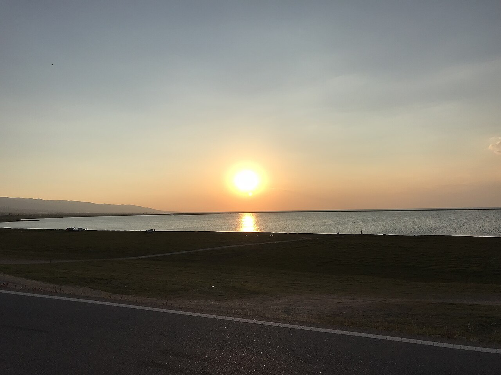
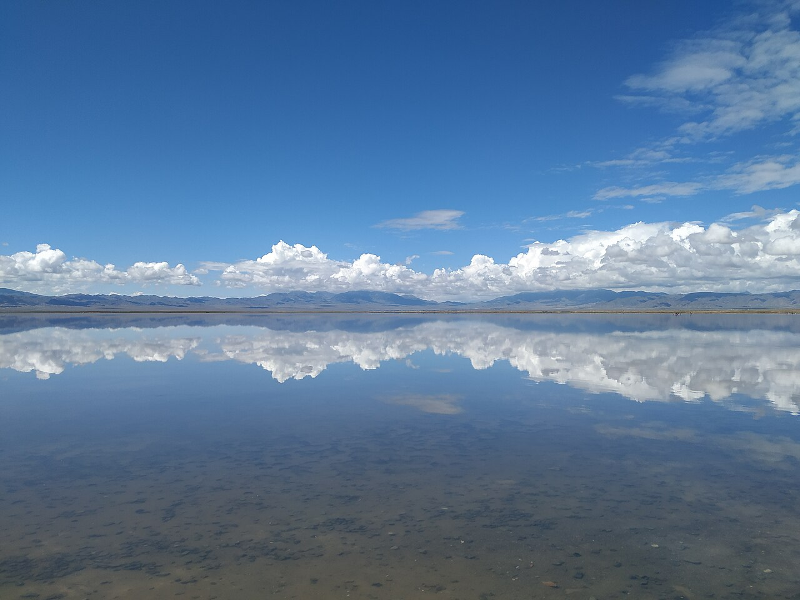

青甘大环线是国内最成熟的西北自驾产品之一：高原湖泊、盐湖镜面、戈壁沙漠、丹霞地貌与草原牧场在一周内轮番登场。线路以西宁为起终点，也可从兰州方向接入，全程铺装为主，适合首次西北自驾的家庭。
经典顺序为：西宁—塔尔寺—青海湖—茶卡盐湖—德令哈—大柴旦—敦煌—嘉峪关—张掖—扁都口—祁连—门源—西宁。柴达木段地广人稀，需注意加油与防晒；敦煌至张掖则进入河西走廊文化带，莫高窟、七彩丹霞是人文与自然双高峰。
7–8 月为旺季，门源油菜花与青海湖油菜花同期盛开，但住宿价格最高。若追求宁静，6 月或 9 月初仍是好选择。全程海拔多在 2000–3500 米，较川藏温和，但紫外线与干燥同样不可忽视。
Itinerary
分日行程
西宁 → 塔尔寺 → 青海湖
上午参观塔尔寺，了解格鲁派艺术与酥油花。下午翻越日月山进入青海湖东岸，可在二郎剑或黑马河看日落。湖边风大，注意保暖与相机防潮。
青海湖 → 茶卡盐湖 → 德令哈
沿湖西行，经黑马河、鸟岛方向（季节开放）至茶卡。盐湖镜面拍摄需关注天气与鞋套规定。下午经柴达木盆地抵达德令哈，可访海子诗歌陈列馆。
德令哈 → 大柴旦 → 翡翠湖
上午前往大柴旦翡翠湖，多个盐池呈现不同绿色调。下午可安排东台吉乃尔或 U 型公路（注意安全，勿在路中间拍照）。大柴旦镇补给完善。
大柴旦 → 敦煌
穿越柴达木与当金山口，进入甘肃境。可选停石油小镇、阳关或玉门关。傍晚抵达敦煌，可预览鸣沙山日落或安排次日莫高窟。
敦煌一日游
莫高窟需提前预约，参观后下午前往鸣沙山月牙泉。骑骆驼、滑沙、等日落是经典组合。注意沙漠防晒与相机防沙。
敦煌 → 嘉峪关 → 张掖
里程较长，建议经嘉峪关短停看天下第一雄关。下午直奔张掖，若时间紧可放弃嘉峪关。张掖七彩丹霞傍晚色彩最佳，可购二次入园票看日落。
张掖 → 扁都口 → 祁连
上午可再看丹霞或马蹄寺。下午经扁都口翻越祁连山，进入青海北缘。祁连县有「东方瑞士」之称，卓尔山日落值得等待。
祁连 → 门源 → 西宁
7 月门源油菜花海最为壮观，非花期则看祁连草原牧场景象。经达坂山返回西宁，完成环线。可在西宁采购牦牛肉干等伴手礼。
Photo Essay
沿途影像




Highlights
核心景点
青海湖
中国最大咸水湖，夏季湖畔油菜花与蓝色湖水形成强烈对比。骑行、徒步、观鸟多种玩法，需注意保护生态勿靠近裸鲤。
茶卡盐湖
「天空之镜」代表，晴天倒影极佳。小火车与盐湖中心拍照需遵守景区规定，鞋套与防晒必备。
莫高窟
世界文化遗产，壁画与彩塑跨越千年。参观严格限流，需提前预约并跟随讲解，窟内禁止拍照。
张掖七彩丹霞
白垩纪红层经风化形成的彩色丘陵，傍晚侧光下层次最佳。景区有多条观光车线路，建议预留 3 小时。
卓尔山
祁连县标志性观景点，可俯瞰牛心山与县城。夏季草原碧绿，冬季则常银装素裹，是环线收官的高光时刻。
Route
途经站点
环线起终点
海拔 2260 米，适合作为适应日。
高原湖泊
黑马河、刚察均可住宿，旺季需提前订。
天空之镜
与青海湖同日或次日，视天气调整。
河西走廊核心
莫高窟、鸣沙山至少留 1 整天。
七彩丹霞
傍晚入园效果最佳。
环线完成
全程约 2800 公里，视支线增减。
Practical
实用信息
- 柴达木与敦煌段日照强、补给间距大，备足饮用水与防晒用品。
- 茶卡、翡翠湖等盐湖勿赤脚踩水，注意皮肤保护。
- 莫高窟、丹霞等景区实名制预约，旺季提前 7–15 天购票。
- 扁都口、当金山口冬季可能雪封，非夏季出行需查路况。
- 尊重藏区与回族地区饮食与宗教禁忌，勿在清真餐厅携带外食猪肉制品。
EV Tips
新能源出行提示
驾驶腾势 N7 等纯电 SUV 出发前，请特别注意以下事项：
- 西宁、青海湖、德令哈、敦煌、张掖均有快充，柴达木段站点相对稀疏，大柴旦前务必补满电。
- 高原强风会增加能耗，侧风路段适当降速可提升续航稳定性。
- 沙漠段注意散热与空气滤芯，离开敦煌后检查轮胎是否夹带砂石。